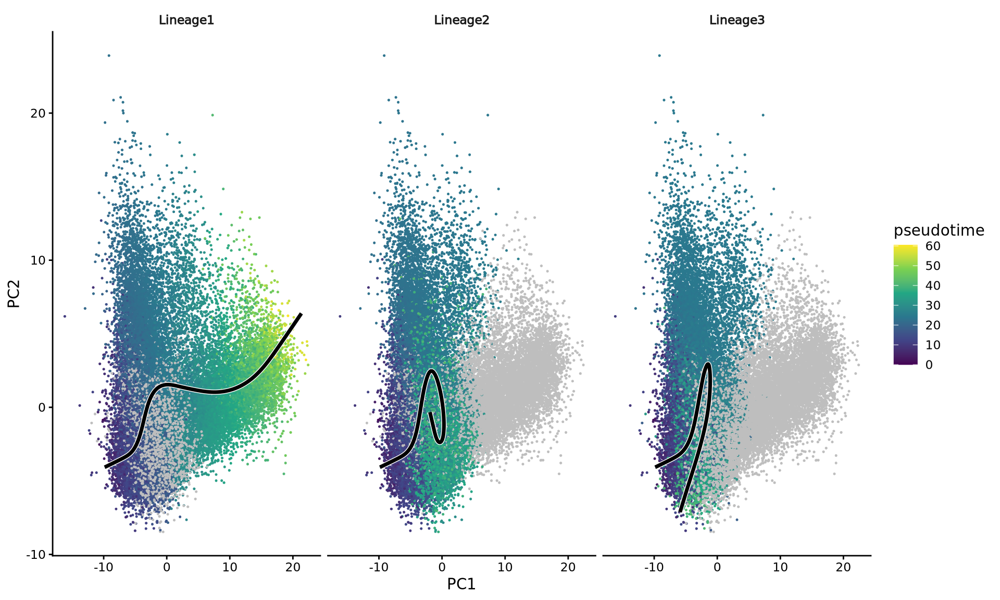
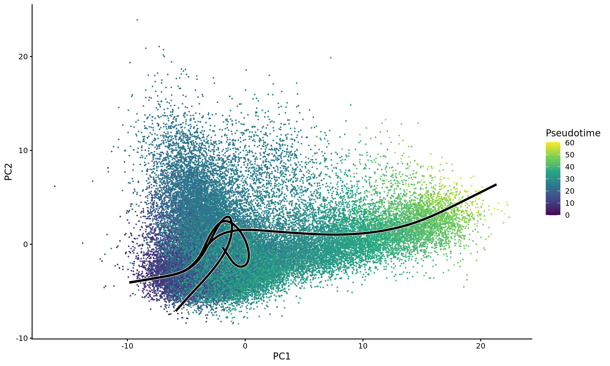
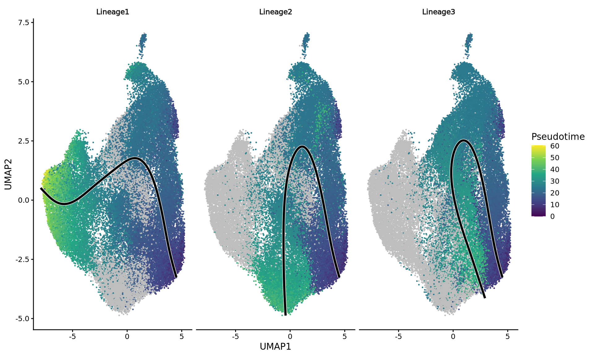
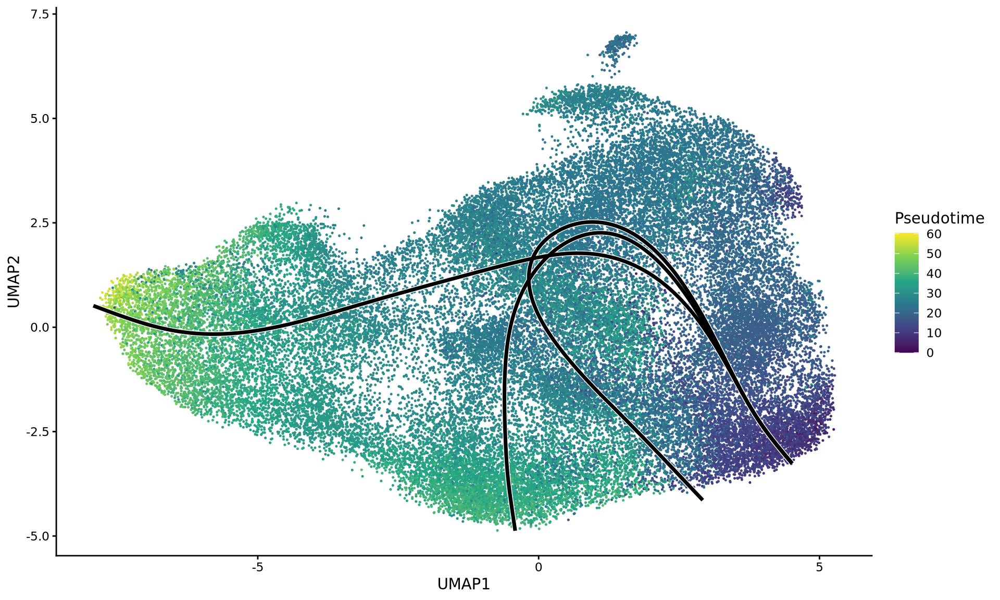
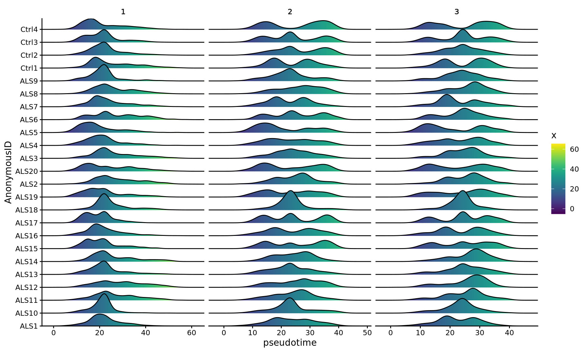
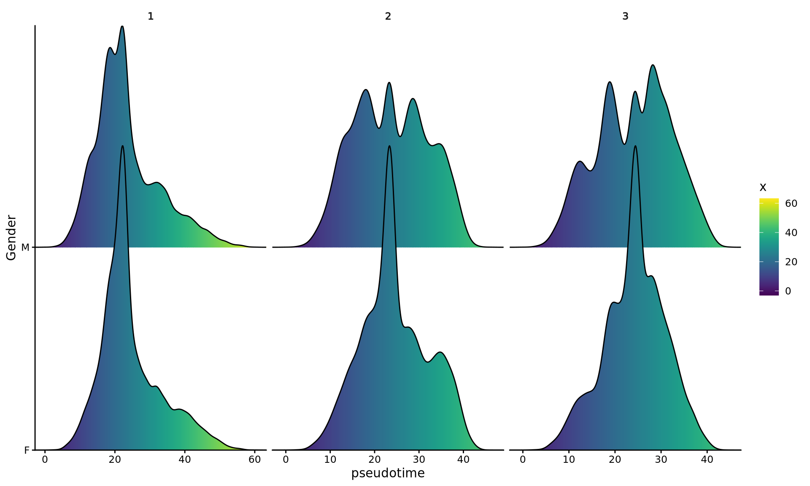
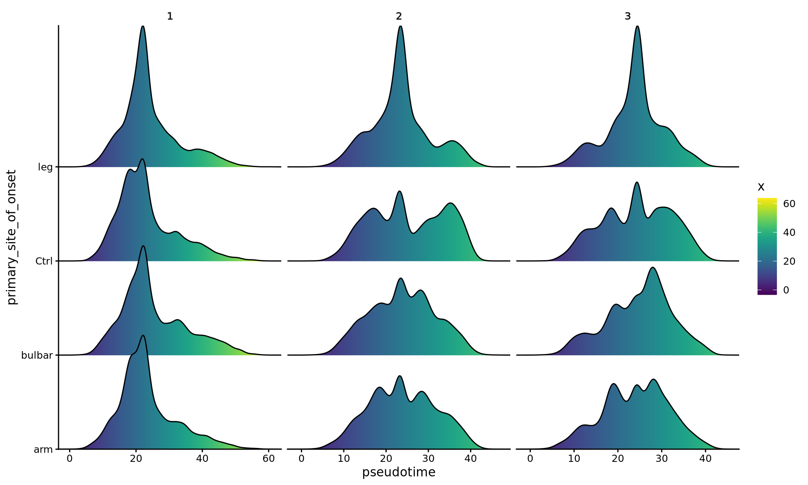
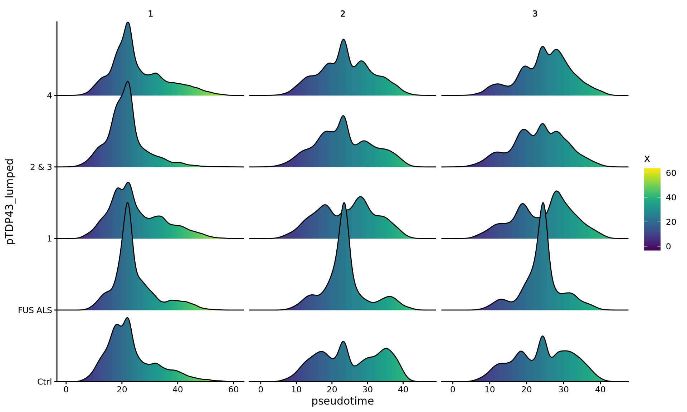
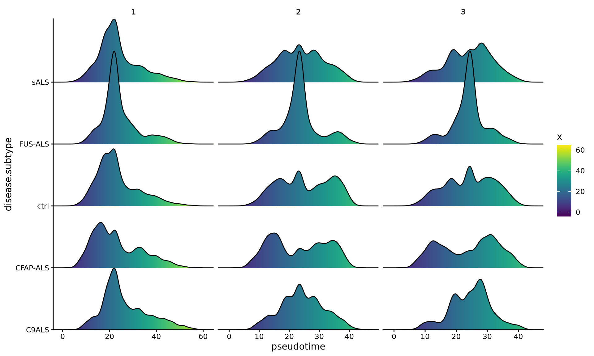

# Basics
library(tidyverse)
library(patchwork)
library(knitr)
library(here)
# Analysis-specific
library(Seurat)
library(slingshot)
library(viridis)
library(ggridges)
library(ggrastr) # To rasterize dot plots, otherwise figure-files balloon3. Trajectory inference with Slingshot
About this analysis
Many studies previously examined astrocyte heterogeneity in ALS, but these mostly use discrete clustering, and we believe approaches which examine continuous changes have been underexplore. Therefore, we performed trajectory inference with Slingshot. This script infers the trajectories; the next script examines differential expression across trajectories with tradeSeq.
Preparation
Prerequisites
This script was run with the conda environment r_scrnaseq_core.
Packages
Directories
# Get string of home directory. I used the here package, which sets the home
# directory when loading library(here)
dir_home <- here::here()
## Data directory
dir_data <- file.path(dir_home, "data/processed")
## Results directories
# Create subfolders with the name of this script, so all figures/tables of
# this script are in the same place
folder_name <- knitr::current_input(dir = FALSE)
folder_name <- str_remove(folder_name, "\\.\\w*$")
dir_fig <- file.path(dir_home, "results/figures", folder_name)
dir.create(dir_fig, recursive = TRUE, showWarnings = FALSE)
dir_tab <- file.path(dir_home, "results/tables", folder_name)
dir.create(dir_tab, recursive = TRUE, showWarnings = FALSE)
## Manuscript figure directory
# rds/grob objects for report figures land here, to be assembled by
# scripts/11_assemble_manuscript_figures.qmd
dir_man <- file.path(dir_home, "results/figures/manuscript")Defining variables
This code block defines variables to be used throughout the rest of the document. If someone ever wants to run these scripts with different variables, they can easily change it here. I’ll substantiate any choices here
res
Slingshots requires you to run a clustering before you run Slingshot, as the trajectory inference depends on clustering. I will not add my annotated clusters from script 02_clustering.qmd; that just draws a trajectory across my clusters. I deliberately set a higher resolution. I tested it for multiple resolutions; none really made sense, 0.5 did the most, so I chose 0.5
reduction
Reduction sets the dimensionality reduction. I used ‘harmony’, the integrated PCA. In converting Seurat to a SingleCellExperiment object, dimensionality reductions get put into capslock; thus, I also entered it in capslock.
vars_ridges
I examined how pseudotime of lineages linked with metadata variables using ridgeplots; with pTDP-43 stage, primary site of onset, and disease subtypes, I can find direct links with ALS-pathology. I added gender as a sanity check and added anonymousID to see whether individual samples drive a certain signal.
# Resolution for clustering before slingshot
res <- 0.5
# Dimensionality reduction to run slingshot on
reduction <- "HARMONY"
vars_ridges <- c(
"AnonymousID",
"Gender",
"primary_site_of_onset",
"pTDP43_lumped",
"disease.subtype"
)Helper functions
Click here to view the helper functions of this document
theme_quarto() and theme_manuscript()
I created my own themes to add to figures. theme_quarto() is used to add themes to figures as displayed in the Quarto document and saved to disk as .pdf or .png. theme_manuscript() is used to add themes to figures as they will end up in the manuscript. I can already add arguments with theme() or specific themes (e.g. theme_classic(), my personal favourite) to plots; adding theme() afterwards keeps whatever was added in theme() before it, unless I specify that arugment here - that’s why I allowed to specify some things within my functions as well.
theme_quarto <- function(
legend_position = "right",
plot_title = element_blank()
) {
theme(
plot.title = plot_title,
legend.position = legend_position
)
}
theme_manuscript <- function(
legend_position = "none",
plot_title = element_blank(),
axis_title_size = 8,
axis_text_size = 6
) {
theme(
plot.title = plot_title,
legend.position = legend_position,
axis.title = element_text(size = axis_title_size),
axis.text = element_text(size = axis_text_size),
legend.key.size = unit(0.4, "cm"),
legend.text = element_text(size = 8),
legend.title = element_text(size = 9)
)
}save_plot()
This document displays all the figures I make, but I also want them saved to disk — both as .png and .pdf. I only need to provide the ggplot object, a filename (without extension), and optionally the width and height of the figure and additional arguments put into themes.
The figures for my written report contain subfigures spread across multiple scripts. Since I want to assemble these panel figures via R code rather than by hand, save_plot() can also optionally save the plot object itself to disk as an .rds file, for a final script to later combine with patchwork. Set figure to the name the figure should carry in the report (e.g. "SF1A") to trigger this; leave it NULL (the default) to just save the .png/.pdf as normal.
A live ggplot object carries its underlying data along with it — for plots built from large Seurat objects, this can balloon the saved file to gigabytes. To avoid this, save_plot() converts the object to a grob (a static, pre-rendered drawing, with no data attached) before saving it as .rds. This is controlled by the grob argument, and defaults to TRUE, since converting a small plot costs nothing but forgetting to convert a large one is expensive. Set grob = FALSE only if a later step specifically needs the original, live ggplot object rather than its rendered form.
save_plot <- function(
p, filename,
width = 10, height = 6,
figure = NULL, grob = TRUE, apply_theme = TRUE,
add_tag = TRUE, tag_text_size = 14,
legend_pos_manuscript = "none"
) {
## Save image on disk as png and pdf
# Add Quarto-specific theme, unless the plot has its own custom theme
if (apply_theme) {
p_image <- p + theme_quarto()
} else {
p_image <- p
}
file_png <- file.path(dir_fig, paste0(filename, ".png"))
ggsave(file_png, p_image, width = width, height = height, dpi = 150)
file_pdf <- file.path(dir_fig, paste0(filename, ".pdf"))
ggsave(file_pdf, p_image, width = width, height = height, dpi = 150)
## Save the ggplot object on disk as an rds file
if (!is.null(figure)) {
# Add tag if needed
if (add_tag) {
tag <- str_extract(figure, "[A-Z]$")
p <- p +
labs(tag = tag) +
theme(
plot.tag = element_text(
face = "bold",
size = tag_text_size,
hjust = 0, vjust = 0
)
)
}
# Add manuscript-specific theme, unless the plot has its own custom theme
if (apply_theme) {
p <- p + theme_manuscript(legend_position = legend_pos_manuscript)
}
file_rds <- file.path(dir_man, paste0(figure, ".rds"))
# Convert the object to a grob if needed
if (grob) {
p <- ggplotGrob(p)
}
# Save on disk
saveRDS(p, file_rds)
}
}print_tabset()
Quarto cannot cross-reference figures that are made inside a loop. To still display the plots of a loop in this document, I collect them in a named list and show them as tabs with print_tabset(). The names of the list become the tab titles. It also accepts data frames (shown as a table). This function writes raw Quarto markdown, so the chunk that calls it needs the chunk option #| output: asis. heading_level should be one deeper than the heading above the chunk.
print_tabset <- function(obj_list, heading_level = 3) {
cat("::: {.panel-tabset}\n\n")
for (nm in names(obj_list)) {
cat(strrep("#", heading_level), " ", nm, "\n\n", sep = "")
obj <- obj_list[[nm]]
if (inherits(obj, "ggplot")) {
print(obj)
} else if (is.data.frame(obj)) {
cat(knitr::kable(obj, format = "pipe"), sep = "\n")
}
cat("\n\n")
}
cat(":::\n\n")
}parse_slingshot()
The function parse_slingshot() parses the results out of the SingleCellExperiment object with the results. It returns all results needed for plots as tidy dataframes, so I can directly put the output into my visualization functions.
You provide the reduction you’ll need for visualization. By default it uses the reduction defined in the chunk define variables (which, in my case, is "HARMONY")
The argument vars_ridges selects the columns which can be used to create ridge plots. I defined these at the top in Defining variables, but use “condition” as default
parse_slingshot <- function(sce, reduction_plot = reduction,
vars_ridges = "condition") {
## Pseudotime for DimReduc plot ----------------------------------------------
pseudotime_dim <- slingPseudotime(sce)|>
as_tibble(rownames = "barcode")
# Extract dimensionality reduction embeddings
dimred_coord <- reducedDim(sce, reduction_plot)[, 1:2] |>
as_tibble(rownames = "barcode")
# Convert colnames of dimensionality reduction to dim1 and dim2, so I can
# use these as variables in ggplot independently of what dimensionality
# reduction needs to be plotted
colnames(dimred_coord) <- c("barcode", "dim1", "dim2")
# Join dimensionality reduction coordinates to pseudotime for DimReduc
pseudotime_dim <- pseudotime_dim |>
inner_join(dimred_coord, by = join_by(barcode))
# Pivot_longer by lineage
pseudotime_dim <- pseudotime_dim |>
pivot_longer(
cols = starts_with("Lineage"),
names_to = "Lineage",
values_to = "pseudotime"
)
## Average pseudotime for DimReduc plot --------------------------------------
pseudotime_dim_avg <- slingAvgPseudotime(sce) |>
as_tibble(rownames = "barcode") |>
dplyr::rename(pseudotime = value) |> # Sometimes uses S4package::rename
inner_join(dimred_coord, by = join_by(barcode))
## Metadata for ridgeplots ---------------------------------------------------
# Slingshot makes the pseudotime of each lineage a column in the metadata,
# so I can simply extract the metadata. However, slingshot also stores a
# Slingshot object in the metadata, which is an S4 object. I need to remove
# this column to be able to use it as a tibble/df for ggplot
metadata <- colData(sce)
metadata <- metadata[, -which(names(metadata) == "slingshot")] |>
as_tibble() |>
select(
starts_with("slingPseudotime"), # selects pseudotime column of all lineages
"barcode", # needed for join with dimensionality reduction
all_of(vars_ridges)
) |>
pivot_longer(
cols = starts_with("slingPseudotime"),
names_to = "Lineage",
names_pattern = "(\\d+)", # Only keep the digit of the lineage
values_to = "pseudotime"
)
## Coordinates curves --------------------------------------------------------
if (reduction_plot == reduction) {
curves <- slingCurves(sce, as.df = TRUE)
} else if (reduction_plot %in% reducedDimNames(sce)){
embedded_curves <- embedCurves(sce, reduction_plot)
curves <- slingCurves(embedded_curves, as.df = TRUE)
} else {
stop("You did not provide a dimensionality reduction which is in the sce")
}
# Rename the first two rows dim1 and dim2, so they're the same as in the
# pseudotime_dim tibble
names(curves)[1] <- "dim1"
names(curves)[2] <- "dim2"
# In pseudotime_dim, lineages are written as "Lineage1", whereas in curves,
# lineages are written as "1". Make them the same for later ggplot use
curves <- curves |>
mutate(Lineage = paste0("Lineage", Lineage))
# Bundle tibbles in list -----------------------------------------------------
pseudotime_list <- list(
"pseudotime_dim" = pseudotime_dim,
"pseudotime_dim_avg" = pseudotime_dim_avg,
"metadata" = metadata,
"curves" = curves
)
pseudotime_list
}plot_pseudotime()
plot_pseudotime() creates a scatterplot with the color indicating pseudotime and an overlaying line of the trajectory. I provided the option to either display individual lineages (as a facetted plot) or to display the average across lineages.
For the line of a lineage, I added two geom_paths: one black and one white. That makes a black line with a white border around it, which makes it easier to see, I think. I also applied ggrastr::geom_point_rast, as that makes the pdf size of manuscript figures managable.
plot_pseudotime <- function(
pseudotime_list,
pseudotime_avg = FALSE,
pt_size = 0.3
) {
pseudotime_dim_avg <- pseudotime_list$pseudotime_dim_avg
pseudotime_dim <- pseudotime_list$pseudotime_dim
curves <- pseudotime_list$curves
if (pseudotime_avg) {
p_pseudo <- ggplot(pseudotime_dim_avg, aes(x = dim1, y = dim2)) +
ggrastr::geom_point_rast(aes(color = pseudotime), size = pt_size) +
scale_colour_viridis_c(na.value = "grey") +
geom_path(
data = curves |> arrange(Order),
mapping = aes(x = dim1, y = dim2, group = Lineage),
linewidth = 1.75, color = "white"
) +
geom_path(
curves |> arrange(Order),
mapping = aes(x = dim1, y = dim2, group = Lineage),
linewidth = 1.25,
colour = "black"
)
p_pseudo <- p_pseudo + theme_classic()
} else {
p_pseudo <- ggplot() +
ggrastr::geom_point_rast(
data = pseudotime_dim,
aes(x = dim1, y = dim2, color = pseudotime),
size = pt_size
) +
scale_colour_viridis_c(na.value = "grey") +
geom_path(
data = curves |> arrange(Order),
mapping = aes(x = dim1, y = dim2),
linewidth = 1.75,
color = "white"
) +
geom_path(
curves |> arrange(Order),
mapping = aes(x = dim1, y = dim2),
linewidth = 1.25,
colour = "black"
) +
facet_wrap(~Lineage)
# Add theme_classic now, otherwise later use overwrites the strip theme
p_pseudo <- p_pseudo + theme_classic() +
theme(
panel.border = element_blank(),
strip.background = element_blank(),
strip.text = element_text(face = "bold")
)
}
p_pseudo
}plot_pseudotime_by()
plot_pseudotime_by() plots how pseudotime abundance is associated with metadata variables.
plot_pseudotime_by <- function(pseudotime_list, variable = "AnonymousID") {
metadata <- pseudotime_list$metadata
p_ridge <- ggplot(
metadata,
aes(
x = pseudotime,
y = .data[[variable]],
fill = after_stat(x))
)+
geom_density_ridges_gradient(scale = 1.5) +
scale_fill_viridis() +
scale_y_discrete(expand = c(0, 0)) + # Otherwise weird whitespace left
scale_x_continuous(expand = c(0, 0)) +
facet_wrap(~Lineage, scales = "free_x")
p_ridge <- p_ridge + theme_classic() +
theme(
panel.border = element_blank(),
strip.background = element_blank(),
strip.text = element_text(face = "bold")
)
p_ridge
}Load data and prepare input
Load the clustered Seurat object
file_rds <- file.path(dir_data, "seu_shortread_astros_clustered.rds")
seu <- readRDS(file_rds)Slingshot requires you to cluster your data before running Slingshot. I defined the resolution in the section Define variables.
cluster_name <- paste0("seurat_cluster_res", res)
seu <- FindClusters(
seu,
resolution = res,
cluster.name = cluster_name,
algorithm = 4, # 4 = Leiden algorithm
verbose = TRUE
)
p_clust <- DimPlot(seu, reduction = "harmony", group.by = cluster_name)Convert to SingleCellExperiment
# Convert to an sce object, as slingshot does not work on seurat
sce <- as.SingleCellExperiment(seu)Running Slingshot
sce <- slingshot(
sce,
clusterLabels = cluster_name, # !!
reducedDim = reduction
)Save the sce with slingshot results on disk in the folder data/processed. TradeSeq requires this as input, all subsequential steps visualize the trajectories
file_rds <- file.path(dir_data, "sce_shortread_astros_slingshot.rds")
saveRDS(sce, file_rds)Parsing the results
For my visualizations, I need the put input in specific formats, for which I defined the function parse_results().
pseudotime_list_harm <- parse_slingshot(
sce,
reduction_plot = "HARMONY",
vars_ridges = vars_ridges
)
pseudotime_list_umap <- parse_slingshot(
sce,
reduction_plot = "UMAP",
vars_ridges = vars_ridges
)Visualization
Visualizations are made with functions I defined myself, plot_pseudotime() and plot_pseudotime_by().
Plots Harmony reduction
p_pseu_harm <- plot_pseudotime(pseudotime_list_harm, pt_size = 0.01) +
labs(x = "PC1", y = "PC2")
p_pseu_harm + theme_quarto()
p_pseu_harm_avg <- plot_pseudotime(pseudotime_list_harm, pseudotime_avg = TRUE,
pt_size = 0.01) +
labs(x = "PC1", y = "PC2") +
labs(color = 'Pseudotime')
p_pseu_harm_avg + theme_quarto()
Plots UMAP reduction
p_pseu_umap <- plot_pseudotime(pseudotime_list_umap, pt_size = 0.01) +
labs(x = "UMAP1", y = "UMAP2") +
labs(color = 'Pseudotime')
p_pseu_umap + theme_quarto()
p_pseu_umap_avg <- plot_pseudotime(pseudotime_list_umap, pseudotime_avg = TRUE,
pt_size = 0.01) +
labs(x = "UMAP1", y = "UMAP2") +
labs(color = 'Pseudotime')
p_pseu_umap_avg
Ridgeplots
These ridgeplots display how abundance of cells with a certain pseudotime overlay with metadata variables.
p_ridge_sample <- plot_pseudotime_by(
pseudotime_list_harm,
variable = "AnonymousID"
)
p_ridge_sample
p_ridge_gender <- plot_pseudotime_by(
pseudotime_list_harm,
variable = "Gender"
)
p_ridge_gender
p_ridge_site <- plot_pseudotime_by(
pseudotime_list_harm,
variable = "primary_site_of_onset"
)
p_ridge_site
p_ridge_tdp <- plot_pseudotime_by(
pseudotime_list_harm,
variable = "pTDP43_lumped"
)
p_ridge_tdp
p_ridge_subtype <- plot_pseudotime_by(
pseudotime_list_harm,
variable = "disease.subtype"
)
p_ridge_subtype
Session info
I used the conda environment r_scrnaseq_core to run this script. You can find major package versions in the file /environments/r_scrnaseq_core.yml, but for full reproducibility, I’ll display all dependencies and package versions below.
sessionInfo()R version 4.4.3 (2025-02-28)
Platform: x86_64-conda-linux-gnu
Running under: Rocky Linux 8.10 (Green Obsidian)
Matrix products: default
BLAS/LAPACK: /path/to/folder/software/miniforge/miniforge3/envs/r_scrnaseq_core/lib/libopenblasp-r0.3.34.so; LAPACK version 3.12.0
locale:
[1] LC_CTYPE=en_US.UTF-8 LC_NUMERIC=C
[3] LC_TIME=en_US.UTF-8 LC_COLLATE=en_US.UTF-8
[5] LC_MONETARY=en_US.UTF-8 LC_MESSAGES=en_US.UTF-8
[7] LC_PAPER=en_US.UTF-8 LC_NAME=C
[9] LC_ADDRESS=C LC_TELEPHONE=C
[11] LC_MEASUREMENT=en_US.UTF-8 LC_IDENTIFICATION=C
time zone: Europe/Amsterdam
tzcode source: system (glibc)
attached base packages:
[1] stats4 stats graphics grDevices utils datasets methods
[8] base
other attached packages:
[1] ggrastr_1.0.2 ggridges_0.5.7
[3] viridis_0.6.5 viridisLite_0.4.3
[5] slingshot_2.14.0 TrajectoryUtils_1.14.0
[7] SingleCellExperiment_1.28.0 SummarizedExperiment_1.36.0
[9] Biobase_2.66.0 GenomicRanges_1.58.0
[11] GenomeInfoDb_1.42.0 IRanges_2.40.0
[13] S4Vectors_0.44.0 BiocGenerics_0.52.0
[15] MatrixGenerics_1.18.0 matrixStats_1.5.0
[17] princurve_2.1.6 Seurat_5.5.1
[19] SeuratObject_5.4.0 sp_2.2-3
[21] here_1.0.2 knitr_1.52
[23] patchwork_1.3.2 lubridate_1.9.5
[25] forcats_1.0.1 stringr_1.6.0
[27] dplyr_1.2.1 purrr_1.2.2
[29] readr_2.2.0 tidyr_1.3.2
[31] tibble_3.3.1 ggplot2_4.0.3
[33] tidyverse_2.0.0
loaded via a namespace (and not attached):
[1] RColorBrewer_1.1-3 jsonlite_2.0.0
[3] magrittr_2.0.5 ggbeeswarm_0.7.3
[5] spatstat.utils_3.2-5 farver_2.1.2
[7] rmarkdown_2.32 ragg_1.5.2
[9] zlibbioc_1.52.0 vctrs_0.7.3
[11] ROCR_1.0-12 Cairo_1.7-0
[13] DelayedMatrixStats_1.28.0 spatstat.explore_3.8-2
[15] S4Arrays_1.6.0 htmltools_0.5.9
[17] SparseArray_1.6.0 sctransform_0.4.3
[19] parallelly_1.48.0 KernSmooth_2.23-27
[21] htmlwidgets_1.6.4 ica_1.0-3
[23] plyr_1.8.9 plotly_4.12.1
[25] zoo_1.9-0 igraph_2.3.3
[27] mime_0.13 lifecycle_1.0.5
[29] pkgconfig_2.0.3 Matrix_1.7-6
[31] R6_2.6.1 fastmap_1.2.0
[33] GenomeInfoDbData_1.2.13 fitdistrplus_1.2-6
[35] future_1.76.0 shiny_1.14.0
[37] digest_0.6.39 rprojroot_2.1.1
[39] tensor_1.5.1 RSpectra_0.16-2
[41] irlba_2.3.7 textshaping_1.0.5
[43] labeling_0.4.3 progressr_1.0.0
[45] spatstat.sparse_3.2-0 timechange_0.4.0
[47] httr_1.4.9 polyclip_1.10-7
[49] abind_1.4-8 compiler_4.4.3
[51] withr_3.0.3 S7_0.2.2
[53] fastDummies_1.7.6 MASS_7.3-66
[55] DelayedArray_0.32.0 tools_4.4.3
[57] vipor_0.4.7 lmtest_0.9-40
[59] otel_0.2.0 beeswarm_0.4.0
[61] httpuv_1.6.17 future.apply_1.20.2
[63] goftest_1.2-3 glue_1.8.1
[65] nlme_3.1-170 promises_1.5.0
[67] grid_4.4.3 Rtsne_0.17
[69] cluster_2.1.8.3 reshape2_1.4.5
[71] generics_0.1.4 gtable_0.3.6
[73] spatstat.data_3.1-9 tzdb_0.5.0
[75] data.table_1.18.6.1 hms_1.1.4
[77] XVector_0.46.0 spatstat.geom_3.8-2
[79] RcppAnnoy_0.0.23 ggrepel_0.9.8
[81] RANN_2.6.2 pillar_1.11.1
[83] spam_2.11-4 RcppHNSW_0.7.0
[85] later_1.4.8 splines_4.4.3
[87] lattice_0.23-1 survival_3.8-12
[89] deldir_2.0-4 tidyselect_1.2.1
[91] miniUI_0.1.2 pbapply_1.7-4
[93] gridExtra_2.3.1 scattermore_1.2
[95] xfun_0.60 leidenbase_0.1.36
[97] stringi_1.8.9 UCSC.utils_1.2.0
[99] yaml_2.3.12 evaluate_1.0.5
[101] codetools_0.2-20 cli_3.6.6
[103] uwot_0.2.5 systemfonts_1.3.2
[105] xtable_1.8-8 reticulate_1.47.0
[107] Rcpp_1.1.2 globals_0.19.1
[109] spatstat.random_3.5-1 png_0.1-9
[111] spatstat.univar_3.2-0 parallel_4.4.3
[113] dotCall64_1.2 sparseMatrixStats_1.18.0
[115] listenv_1.0.0 scales_1.4.0
[117] crayon_1.5.3 rlang_1.3.0
[119] cowplot_1.2.0